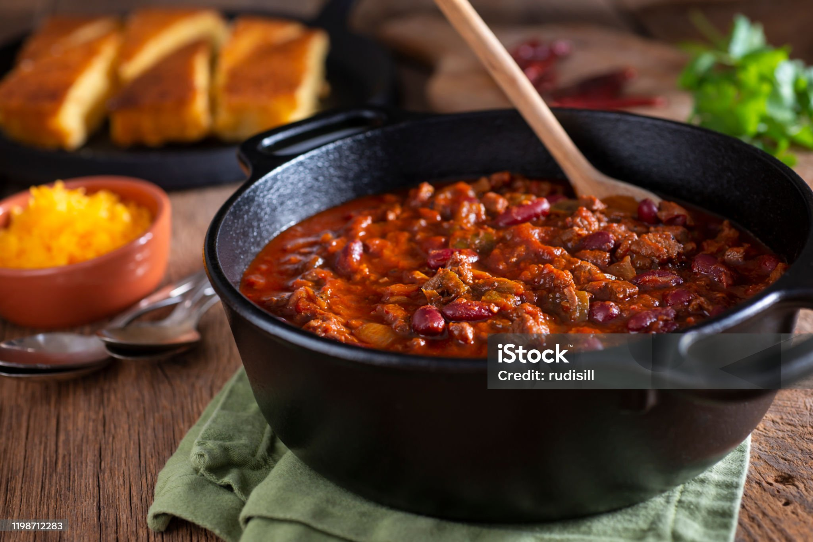
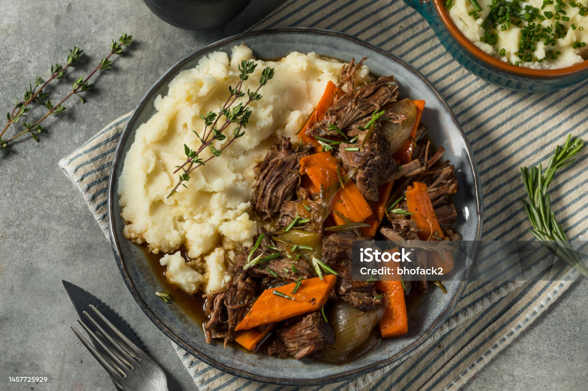

Budget bites recipies
What to expect
This will contian a list of cheap meals to cook for family, or for just yourself. The ingredients for each will be listed, along with the price per plate.
This is primarily just for budget meals, not neccsarily for health purposes. If you are keeping yourself to a strict diet, there is another list on the right focusing on health.

Fried Rice

Fried rice is a great option for single people in family alike. It's simple, quick to make, budget friendly and most importantly delicous. There are also a lot of ways to make fried rice, be creative!
Ingredients
Cooked Rice (2 cups, preferably cold) Price: $1.00
Soy Sauce (2 tablespoons) Price: $0.50
Chili Oil (1 tablespoon) Price: $0.75
Garlic (2 cloves, minced) Price: $0.50
Carrots (1 cup, diced) Price: $0.75
Peas (1/2 cup) Price: $0.50
Green Onions (2 stalks, chopped): Price: $0.50
Eggs (2, beaten) Price: $0.75
Cooked Chicken Breast (1 cup, diced) Price: $3.00
Price per Serving (Assuming 4 servings): $2.00
5 ingredient Chili
Chili is usually best for family situations. it's simple, easy to make and provides a lot of food for a little price. Though I'd be dishonest if I said it was necessarily quick; it can take a little while to cook. But, after getting everything into the pot, it requires little to no attention.
Ingredients
Ground Beef (1 pound): Price: $4.00
Kidney Beans (1 can, 15 oz): Price: $1.00
Diced Tomatoes (1 can, 14.5 oz): Price: $1.50
Chili Powder (2 tablespoons): Price: $0.50
Chili Powder (2 tablespoons):Price: $0.50
Estimated cost per serving (assuming four servings): $1.94
Beef tips brown gravy with broccoli
While not as popular as the others, it's one of my favorite meals from my childhood. Beef tips, or beef scraps, are cheap and generally used for stews and the like. Being a cheap cut does have disadvantages, though, as it can be tough if not prepared properly. But paired with an excellent gravy, which you can just easily buy mix for, can make a great centerpiece to a meal. Broccoli and normally potatoes serve as great sides.
Ingredients
Beef Tips (1 pound): Price: $8.00
Broccoli (1 head, chopped) Price: $2.50
Brown Gravy Mix (1 packet) Price: $1.00
Onion (1 medium, diced) Price: $0.75
Garlic (2 cloves, minced) Price: $0.50
Olive Oil (2 tablespoons) Price: $0.50
Estimated cost per serving (assuming four servings): $3.38
Chicken rice casserole
Another meal from my childhood, just like the 5-ingredient chili, it's simple, cheap, and easy to prepare. After assembling in a casserole dish all you really need to do is put it in the oven; it requires almost no attention.
Ingredients
Chicken Breast (2 cups, cooked and shredded) Price: $5.00
White Rice (1 cup, uncooked) Price: $1.00
Cream of Mushroom Soup (1 can, 10.5 oz) Price: $1.50
Broccoli Florets (1 cup) Price: $1.50
Cheddar Cheese (1 cup, shredded) Price: $2.00
Chicken Broth (1 cup) Price: $0.50
Onion (1 medium, diced) Price: $0.75
Price per Serving (Assuming 4 servings): $3.19